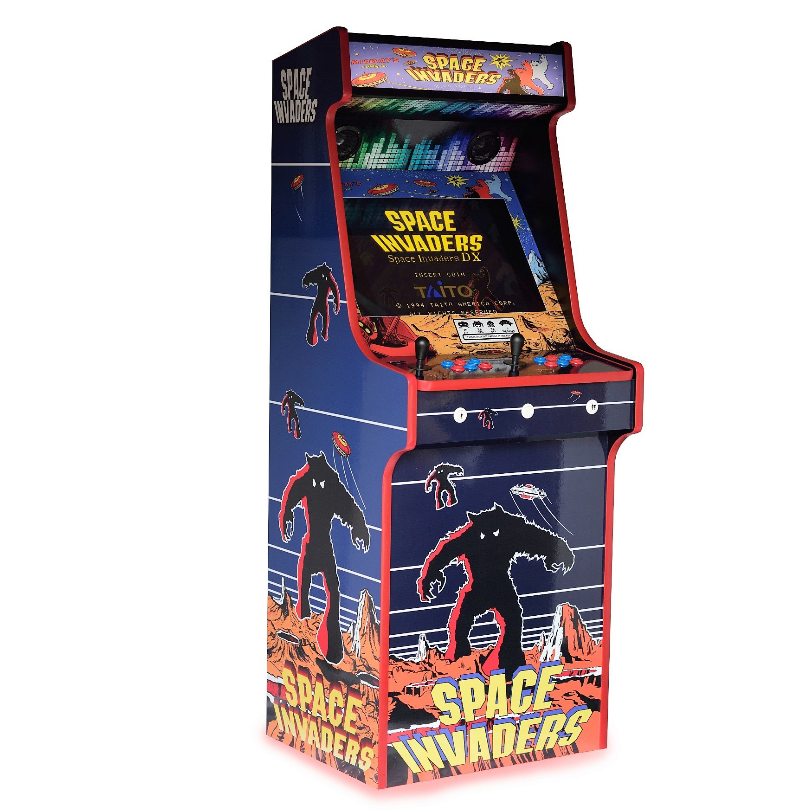

La historia de los videojuegos está grandemente conectada a la evolución del ordenador. En 1950, ordenadores del tamaño de habitaciones solo podían resolver pequeños problemas aritméticos. En estos momentos nadie pensaba en utilizar estas bestias para jugar juegos. Aún asi, en universidades de los Estados Unidos, mentes creativas desarrollaron juegos de computador muy simples.
Estos inventos no estaban pensados para el entretenimiento, sino para demostrar como funcionaba esta tecnología. Tennis for Two, aparecido en 1958, fue el primer juego creado puramente para el entretenimiento.
En 1972, la empresa Atari se fundó, convirtiéndose en la compañía que dominaría la industria del videojuego. No fue hasta 1978 con el juego Space Invaders que una empresa conseguía atraer a mucha gente por muy poco dinero, poniéndolo en una caja que permitía al usuario jugar al introducir una moneda, estas máquinas ahora las conocemos como Arcades.
Podemos observar en la siguiente tabla la situación economica actual en el sector de los videojuegos.
| País | Habitantes (millones) | Habitantes con internet (millones) | Ingresos sector videojuegos (millones de dólares) |
|---|---|---|---|
| China | 1415 | 850 | 34 400 |
| Estados Unidos | 327 | 265 | 31 532 |
| Japón | 127 | 121 | 14 715 |
| Corea del Sur | 51 | 48 | 5 764 |
| Alemania | 82 | 76 | 4 989 |
| Reino Unido | 67 | 64 | 4 731 |
| Francia | 65 | 58 | 3 366 |
Datos de la tabla obtenidos de InterText.
El videojuego, como todos los medios, evoluciona, crece, se transforma, se equivoca, rectifica y acierta. Durante los últimos años hemos asistido a toda una revolución dentro de esta industria cultural: el auge y crecimiento de la producción independiente, los videojuegos indie.
>En el inicio del siglo XXI, los indies hicieron su aparición en la escena principal del videojuego. Ya existían, pero se dieron a conocer al gran público. Ahora son parte indisoluble del medio. Es tan habitual jugar a God of War como hacerlo a Hollow Knight.
¿Qué es un videojuego indie? La definición sencilla es: todo juego que no cuenta con respaldo financiero de una gran empresa. Pero los indies son mucho más. Ya existían con el nacimiento del medio. Eran muchos los entusiastas del desarrollo y las nuevas tecnologías los que se dedicaban a compartir sus creaciones allá por los 80 y 90. Físicamente y a través de un primitivo internet, el desarrollo independiente siempre ha existido. Lo que ha pasado en los últimos diez años ha sido una especie de revolución.
Aunque mueven menos dinero que los juegos triple a, los videojuegos indie son un referente en la industria por algunos de los motivos que ya te hemos comentado antes. Aquí te dejamos una lista con algunos videojuegos que seguro que conoces: